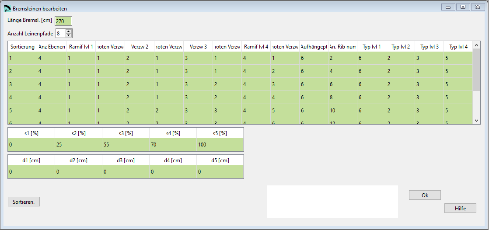

Bremsleinen¶
Im Fenster Bremsleinen können die Parameter aus dem 10. Abschnitt der lep Datei bearbeitet werden, die Bremsleinen.
{kind=link}
Rohdaten:
***************************************************
* 10. BRAKES
***************************************************
270
12
4 1 1 2 1 3 1 4 1 6 2
4 1 1 2 1 3 1 4 2 6 3
4 1 1 2 1 3 2 4 3 6 4
4 1 1 2 1 3 2 4 4 6 5
4 1 1 2 2 3 3 4 5 6 6
4 1 1 2 2 3 3 4 6 6 7
4 1 1 2 2 3 4 4 7 6 8
4 1 1 2 2 3 4 4 8 6 9
4 1 1 2 3 3 5 4 9 6 10
4 1 1 2 3 3 5 4 10 6 11
4 1 1 2 3 3 5 4 11 6 12
4 1 1 2 3 3 5 4 12 6 13
* Brake distribution
0 25 55 70 100
0 0 0 0 0
Die Definition der Bremsleinen erfolgt nach demselben Schema wie für die Hauptleinen.
Mehr zur Konfiguration der Hauptleinen findest Du hier.
Was Du sonst noch wissen musst¶
Die Hauptbremsleine ist fix Ebene 1 zugeordnet.
Die Hauptleinen können nur an die Aufhängepunkte der Rippen verbunden werden. Die Bremsleinen können auch zwischen den Rippen platziert werden. Dazu definierts Du die Rippennummer mit einer Kommastelle.
Beispiel: 8.4 bedeutet dass die Bremsleine zwischen Rippe 8 und 9, auf 40% der Distanz zwischen den Rippen platziert werden soll.
Verlängerung der Bremsleinen¶
Wenn notwendig können die Bremsleinen verlängert werden. Dazu können mit 5 Eckpunkten Verlängerungszonen entlang des Schirmes definiert werden.

s 1, 2, 3, 4, 5¶
Die Position des Eckpunktes entlang des Flügels ausgehend von der Flügelmitte. Definiert wird die Distanz in [% Flügelspannweite].
d 1, 2, 3, 4, 5¶
Die Verlängerung der Bremsleinen für diesen Punkt.
Sortieren¶
Mit der Schaltfläche Sortieren können die Zeilen neu angeordnet werden. Wenn das gemacht werden soll kannst Du die neuen Nummern in der ersten Spalte einsetzten und anschliessend mit der Schaltfläche die Tabelle neu sortieren.
Eine detaillierte Beschreibung in englisch findest Du auf der Laboratori d'envol website.